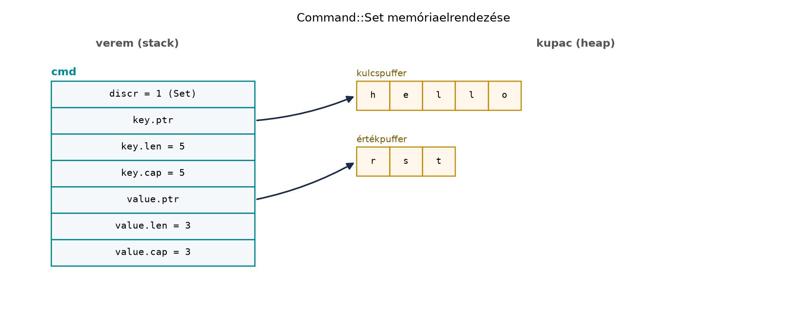

Egy C++-fejlesztő számára a „típus és a hozzá tartozó adat”
modellezése több eszköz között oszlik meg. Az enum class
típusbiztos, de nem hordoz adatot: ha egy parancsfeldolgozó
Get, Set, Delete és
List műveleteket kezel, az enum class
önmagában csak a diszkriminánst adja, a kulcsot és az értéket külön
std::optional vagy std::variant mezőkben kell
tárolni. Az öröklés-alapú megoldás szétteríti a logikát, a
std::visit pedig kevésbé olvasható, mint egy kimerítő
mintaillesztés. A Rust válasza az összeg-típus (sum
type) nyelvi szinten: az enum variánsai
közvetlenül hordoznak adatot, így a fordító biztosítja, hogy minden
lehetséges alakot kezeljünk. Ugyanebből a családból jön az
Option<T>, amely a hiányzó értéket nem null
pointerként, hanem külön típusként modellezi.
Definíció. A Rust enum olyan zárt
összeg-típus, amely véges számú variánst definiál. Minden variáns
hordozhat adatot, akár név nélküli tuple-szerű mezőkkel, akár névvel
ellátott mezőkkel; a variánshalmaz később (a modulon belül) nem
bővíthető anélkül, hogy ne jelezné a fordító a hiányzó mintákat.
Szabály. Az enum variánsainak adatait csak
mintaillesztéssel lehet elérni. A match kimerítő: ha egy
enum értékét match-csel vizsgáljuk, minden
variánst le kell fedni, vagy _ ágat kell használnunk. A
variánsok adatai a mintaillesztésben kötött változókkal bonthatók
ki.
Definíció. Az Option<T> a
standard könyvtár generikus enumja:
pub enum Option<T> {
None,
Some(T),
}A None nem null pointer, hanem egy külön variáns; a
Some(T) a jelen lévő értéket hordozza. Az
Option használata kötelezővé teszi a hiányzó eset
kezelését, mert a T és az Option<T>
különböző típusok.
Szabály. Az Option<T> értékéből a
belső T nem nyerhető ki implicit konverzióval:
Some(5) nem adható át olyan helyre, ahol
i32-et várunk. Az eléréshez match,
if let, unwrap_or,
unwrap_or_else, map, and_then
vagy más explicit kombinator szükséges.
Vegyünk egy parancsot, amely egy kulcs–érték tárolóban
Get, Set, Delete vagy
List műveletet jelent. C++17-ben tipikus megoldás a
std::variant:
#include <type_traits>
#include <variant>
#include <string>
#include <optional>
#include <vector>
struct Get { std::string key; };
struct Set { std::string key; std::string value; };
struct Delete { std::string key; };
struct List { std::optional<std::string> prefix; };
using Command = std::variant<Get, Set, Delete, List>;A feldolgozás std::visit-tel történik, ahol a látogató
gyakran egy külön osztály vagy egy általános lambda:
std::string to_line(const Command& cmd) {
return std::visit([](const auto& c) -> std::string {
using T = std::decay_t<decltype(c)>;
if constexpr (std::is_same_v<T, Get>)
return "GET " + c.key;
else if constexpr (std::is_same_v<T, Set>)
return "SET " + c.key + " " + c.value;
else if constexpr (std::is_same_v<T, Delete>)
return "DEL " + c.key;
else
return c.prefix ? "LIST " + *c.prefix : "LIST";
}, cmd);
}Rustban ugyanez egyetlen enum:
#[derive(Debug, Clone, PartialEq, Eq)]
pub enum Command {
Get(String),
Set(String, String),
Delete(String),
List(Option<String>),
}
impl Command {
pub fn to_line(&self) -> String {
match self {
Command::Get(key) => format!("GET {key}"),
Command::Set(key, value) => format!("SET {key} {value}"),
Command::Delete(key) => format!("DEL {key}"),
Command::List(prefix) => match prefix {
Some(p) => format!("LIST {p}"),
None => "LIST".to_string(),
},
}
}
}A különbség lényege nem az, hogy a C++ std::variant „nem
ismeri” az alternatíváit: ismeri (index(),
holds_alternative), és a std::visit látogatója
értékkel is visszatérhet (mint fent a to_line), valamint
fordítási hibát ad, ha a látogató nem fedi le az összes alternatívát. A
valós különbségek: (1) a Rust enum variánsai névvel ellátott
nyelvi elemek (Command::Get), míg a
std::variant alternatívái típusok vagy indexek, ezért
azonos típusú alternatívákhoz burkolók kellenek; (2) a minta szintaxisa
egyszerre bontja ki az adatot, beágyazva és őrfeltételekkel
(Some((k, v)) if ...), a C++ std::visit ehhez
if constexpr vagy túlterhelt látogató kell; (3) a Rust
match kimerítőségét a nyelv ellenőrzi akkor is, ha
beágyazott mintákról van szó, és új variáns felvételekor a fordító
minden match helyet jelez.
Option<T> a hiányzó értékreTegyük fel, hogy egy konfigurációs térképet keresünk. C++-ban a
hiányzó kulcsot gyakran null pointer vagy std::optional
jelzi:
#include <unordered_map>
#include <string>
#include <optional>
std::optional<std::string> find_value(
const std::unordered_map<std::string, std::string>& map,
const std::string& key)
{
auto it = map.find(key);
if (it == map.end()) return std::nullopt;
return it->second;
}A hívó könnyen elfelejtheti a std::nullopt ellenőrzését,
vagy *opt-tal hozzáférhet anélkül, hogy a hiányzó esetet
kezelné. Rustban a visszatérési típus
Option<&String>:
use std::collections::HashMap;
fn find_value<'a>(map: &'a HashMap<String, String>, key: &str) -> Option<&'a String> {
map.get(key)
}A hívó nem tudja a &String értéket közvetlenül
használni, mert az Option<&String> típusú. Az
Option metódusai explicit kezelést kínálnak:
let mut map = HashMap::new();
map.insert("host".to_string(), "localhost".to_string());
// Alapértelmezett érték, ha hiányzik:
let host = map.get("host").map(|s| s.as_str()).unwrap_or("127.0.0.1");
// Láncolt transzformáció:
let port = map.get("port").and_then(|s| s.parse::<u16>().ok());
// Átalakítás Result-tá:
let value = map.get("key").cloned().ok_or("missing key");Itt a map Option<&String>-et ad;
a .map() átalakítja a belső &String-et
&str-ré, az unwrap_or pedig a
None esetet kezeli. Az and_then olyan
függvényt vár, amely maga is Option-t ad vissza – a
.parse() például Result-ot ad, amit
.ok()-kal alakítunk Option-né. Az
ok_or a None-t Err-ré alakítja,
ami átvezet a Result, a ? operátor és a
panic helye alfejezethez. Ezt a részt itt csak előkészítjük, a
részletes hibakezelés később következik.
Az Option<&T> reprezentációja különösen
fontos. Mivel a Rust referenciái soha nem lehetnek nullok, a fordító a
null mutatóértéket használhatja a None jelölésére. Ezt
niche-optimalizációnak nevezzük, és bizonyos típusokra a dokumentáció
garantálja: az Option<&T>,
Option<&mut T>,
Option<Box<T>> és
Option<NonNull<T>> mérete és ABI-ja megegyezik
a mögöttes mutatóéval, ha T: Sized (lásd az
std::option modul „Representation” szakaszát). Sized
T-re ez egy gépi szó, x86-64-en 8 bájt. Nem
Sized célnál (&str, &[T],
&dyn Trait) a referencia széles (két gépi
szó), és az Option mérete ilyenkor is a referenciáéval
egyezik (x86-64-en 16 bájt), de ezt a dokumentáció már nem
ABI-garanciaként, csak megfigyelt elrendezésként rögzíti. A
NULL tehát nem a programozó kezébe kerül, hanem a
típusrendszer belsejébe.
Command enumjaMunkakönyvtár: ~/rust-labor/rkv/
Ebben a laborban létrehozzuk az rkv szöveges protokolljának
parancsait reprezentáló Command enumot. A protokoll szerint
a kliens a következő sorokat küldheti:
GET <kulcs>
SET <kulcs> <érték>
DEL <kulcs>
LIST [<prefix>]A kulcs String. A Set variáns értéke is
String, mert a parancs a szöveges protokoll egy
sora: a hálózaton vagy a parancssorban érkező érték mindig szöveg. A
tárolóban viszont az érték Vec<u8>, ahogy a Structok és metódusok: impl blokkok, asszociált
függvények alfejezet rögzítette; a kettő közti átalakítás a parancs
végrehajtásakor történik (value.into_bytes(), illetve
kiíráskor String::from_utf8). Ez a kettősség az egész
könyvben érvényes: a protokoll szöveges, a tároló bájtalapú.
rkv-core könyvtárban a
command.rs modult:Kódblokk — fájl: rkv-core/src/command.rs ·
művelet: új fájl · ellenőrzés: a 2. lépés után
cargo build -p rkv-core
//! A szöveges protokoll parancsai.
/// A kliens által küldött parancs.
#[derive(Debug, Clone, PartialEq, Eq)]
pub enum Command {
Get(String),
Set(String, String),
Delete(String),
List(Option<String>),
}
impl Command {
/// Visszaadja a parancs szöveges formáját.
pub fn to_line(&self) -> String {
match self {
Command::Get(key) => format!("GET {key}"),
Command::Set(key, value) => format!("SET {key} {value}"),
Command::Delete(key) => format!("DEL {key}"),
Command::List(prefix) => match prefix {
Some(p) => format!("LIST {p}"),
None => "LIST".to_string(),
},
}
}
}rkv-core/src/lib.rs-ben:Kódblokk — fájl: rkv-core/src/lib.rs · művelet:
beillesztés a fájl elejére, a use sorok elé · ellenőrzés:
cargo build -p rkv-core
pub mod command;command.rs fájl
végéhez:Kódblokk — fájl: rkv-core/src/command.rs ·
művelet: beillesztés a fájl végére · ellenőrzés:
cargo test -p rkv-core → 4 sikeres teszt (a 2 új és a Structok és metódusok: impl blokkok, asszociált
függvények alfejezetbeli 2)
#[cfg(test)]
mod tests {
use super::*;
#[test]
fn list_prefix_none_has_no_trailing_space() {
let cmd = Command::List(None);
assert_eq!(cmd.to_line(), "LIST");
}
#[test]
fn set_formats_key_and_value() {
let cmd = Command::Set("name".into(), "rust".into());
assert_eq!(cmd.to_line(), "SET name rust");
}
}cargo test -p rkv-coreVárt kimenet (rövidítve; a tesztek sorrendje változhat):
running 4 tests
test command::tests::list_prefix_none_has_no_trailing_space ... ok
test command::tests::set_formats_key_and_value ... ok
test tests::delete_returns_old_value ... ok
test tests::set_and_get ... ok
test result: ok. 4 passed; 0 failed; ...A derive(Debug, Clone, PartialEq, Eq) azt jelenti, hogy
a parancs kiírható, klónozható és összehasonlítható. A
Clone itt még kényelmes, de a későbbi alfejezetekben látni
fogjuk, hogy a Rust alapértelmezésben mozgat, nem klónoz.
Továbbvitt eredmény. A Command enum a
rkv-core/src/command.rs fájlban él. Ezt a típust használja
a Mintaillesztés: match, if let, let else és a
minták alfejezet a kimerítő minták bemutatására, a Result, a ? operátor és a panic helye
alfejezet a protokoll-elemző hibakezelésére, valamint a Deklaratív és procedurális makrók alfejezet a
derive-makrók működésének magyarázatára.
Ellenőrzési pont. Az rkv-core a
Store mellett a command::Command enumot is
exportálja (Get, Set(String, String),
Delete, List(Option<String>),
to_line); a cargo test -p rkv-core 4 sikeres
tesztet futtat, az rkv-cli változatlan.
Az alapértelmezett (repr(Rust)) enum elrendezését a
nyelv szándékosan nem rögzíti: a fordító szabadon választhat
diszkrimináns-méretet, mezősorrendet, és a diszkriminánst el is rejtheti
egy mező tiltott bitmintái között (niche). Garantált elrendezés csak
#[repr(C)], #[repr(u8)] és hasonló
attribútumokkal, illetve az Option fent felsorolt eseteire
létezik. Az alábbi ábra ezért szemléltető modell: egy
külön diszkriminánssal és a legnagyobb variáns adatterületével mutatja a
Command::Set(String, String) értéket (kulcs
"hello", érték "rst"), mert így a legkönnyebb
megérteni, mit tárol egy enum:

A modellben a cmd veremváltozó a variáns jelzését és a
két String hármast (mutató, hossz, kapacitás) tartalmazza;
a tényleges bájtsorozatok a kupacon vannak. A Get vagy
Delete variáns csak egy String hármast
használ, ezért az enum mérete legalább a legnagyobb variáns mérete.
A ténylegesen mért méret ettől eltérhet. Rust 1.99.1-gyel,
x86_64-unknown-linux-gnu targeten a
std::mem::size_of szerint a String 24, az
Option<String> is 24, a Command pedig 48
bájt, vagyis pontosan két String: a fordító nem
tárol külön diszkriminánst, hanem a String
kapacitásmezőjének tiltott értékei (a kapacitás legfeljebb
isize::MAX lehet) között kódolja a variánst és az
Option None-ját. Ez a niche-optimalizáció
megfigyelt eredménye, nem garancia: más toolchain vagy target más
elrendezést adhat, ezért kódunk soha ne építsen rá. A
String adatmutatója egyébként sosem null, üres
String esetén sem (ilyenkor egy nem null, de nem
dereferálható „dangling” címet tárol), tehát a None
jelölésére nem null mutató szolgál.
unwrap() mindenhol az
Option-ön. A C++-fejlesztő, aki megszokta a null
pointer ellenőrzésének elhagyását, hajlamos unwrap()-pel
„lerövidíteni” a kódot. Ez visszahozza a null pointer hibát:
None esetén pánik. Az idiomatikus megoldás a
match, if let, vagy az
unwrap_or-kombinatorok.
std::variant szokás átvitele. Aki
std::variant-hoz van szokva, gyakran külön structokat
definiál minden variánshoz, és az enum csak egy diszkriminánst
tartalmaz. Ez felesleges: a Rust enum variánsai közvetlenül hordozhatják
az adatokat, és a match automatikusan kibontja
őket.
A None és az üres érték
összekeverése. Az Option<String> esetén a
None azt jelenti, hogy nincs érték; a
Some(String::new()) azt, hogy van egy üres sztring. A kettő
szemantikailag különbözik, és a protokollban a LIST
parancsnál a None a prefix nélküli listázást jelenti, míg a
Some("") üres prefixet adna – ezt a labor
to_line függvénye kezeli is.
Klónozás a borrow checker „legyőzésére”. Az
Option<&T> helyett sokan
Option<T>-t használnak, majd clone()-t
hívnak, hogy a kölcsönzési hibákat megkerüljék. Ez felesleges allokációt
okoz, és elkeni a tulajdonosi viszonyokat. Az
Option<&T> gyakran elég, és a niche-optimalizáció
miatt a mérete is azonos.
let x: Option<i32> = Some(5);
let y = x + 1;Válaszold meg, hogy lefordul-e, és ha nem, mi a hiba lényege.
Írd át Rust enummá a következő C++ std::variant-ot:
using Value = std::variant<std::monostate, int, double, std::string>;Írj egy describe függvényt, amely
match-csel kiírja, hogy az adott variáns milyen típusú.
Bővítsd a rkv-core/src/command.rs fájlban lévő
Command enumot egy Ping variánssal. Frissítsd
a to_line metódust, hogy a Ping esetén
"PING"-et adjon vissza. Adj hozzá egy tesztet is.
Az alábbi függvény pánikol, ha a kulcs nincs a térképpen:
fn get_or_panic(map: &HashMap<String, String>, key: &str) -> String {
map.get(key).unwrap().clone()
}Refaktoráld a függvényt úgy, hogy None esetén
"missing" értéket adjon vissza, és ne pánikoljon. Mutass be
legalább két különböző megoldást (match,
unwrap_or, map + unwrap_or).
A kód nem fordul le. Az Option<i32> és az
i32 különböző típusok; a + operátor nem
értelmezett Option<i32> és i32 között. A
hiba lényege: a Some(5) értéket előbb ki kell bontani,
például x.unwrap_or(0) + 1 vagy
match x { Some(n) => n + 1, None => 0 } módon.
#[derive(Debug, Clone, PartialEq)]
pub enum Value {
Empty,
Int(i32),
Float(f64),
Text(String),
}
impl Value {
pub fn describe(&self) -> &'static str {
match self {
Value::Empty => "empty",
Value::Int(_) => "int",
Value::Float(_) => "float",
Value::Text(_) => "string",
}
}
}A std::monostate megfelelője a Empty
variáns adat nélkül; a int, double és
std::string a Int, Float és
Text variánsok adattal.
#[derive(Debug, Clone, PartialEq, Eq)]
pub enum Command {
Get(String),
Set(String, String),
Delete(String),
List(Option<String>),
Ping,
}
impl Command {
pub fn to_line(&self) -> String {
match self {
Command::Get(key) => format!("GET {key}"),
Command::Set(key, value) => format!("SET {key} {value}"),
Command::Delete(key) => format!("DEL {key}"),
Command::List(prefix) => match prefix {
Some(p) => format!("LIST {p}"),
None => "LIST".to_string(),
},
Command::Ping => "PING".to_string(),
}
}
}Új teszt:
#[test]
fn ping_formats_as_ping() {
let cmd = Command::Ping;
assert_eq!(cmd.to_line(), "PING");
}Ez a változat előkészíti a Mintaillesztés
alfejezetet, ahol a Ping mintát is vizsgáljuk.
Első megoldás match-csel:
fn get_or_missing(map: &HashMap<String, String>, key: &str) -> String {
match map.get(key) {
Some(v) => v.clone(),
None => "missing".to_string(),
}
}Második megoldás map + unwrap_or:
fn get_or_missing(map: &HashMap<String, String>, key: &str) -> String {
map.get(key).map(|s| s.clone()).unwrap_or_else(|| "missing".to_string())
}Harmadik, tömörebb változat cloned +
unwrap_or:
fn get_or_missing(map: &HashMap<String, String>, key: &str) -> String {
map.get(key).cloned().unwrap_or_else(|| "missing".to_string())
}Mindhárom ugyanarra a szerződésre épül: hiányzó kulcsra a
"missing" szöveg, jelenlévő kulcsra az érték
tulajdonolt másolata; ellenőrzött kimenet a
{a: "x", b: "missing"} térképen: a →
x, b → missing, c →
missing. (Figyelem: a szerződés nem különbözteti meg a
hiányzó kulcsot attól, amikor a kulcs értéke maga a
"missing" szöveg, ahogy a b kulcs mutatja; ha
a hívónak ezt tudnia kell, Option<String> visszatérés
kell.) A cloned() az
Option<&String>-et
Option<String>-gé alakítja: a térkép marad az értékek
tulajdonosa, a függvény pedig tulajdonolt String-et ad
vissza, ezért a hivatkozott értéket le kell másolni
(String::clone). Ugyanezt teszi a
map(|s| s.clone()).
A Rust enum zárt összeg-típus, amelynek variánsai adatot
hordoznak; ez a C++ enum class + std::variant
+ öröklés kombinációját egyetlen nyelvi elemben egyesíti. A
variánsadatokat match-csel érjük el, a kimerítőség
garantálja a hiányzó esetek fordítási idejű jelzését. Az
Option<T> (Some(T) / None)
kiváltja a null pointert: a hiányzó érték külön típus, amelynek kezelése
kötelező. Az Option kominatorai (map,
and_then, unwrap_or, ok_or) a
hiányzó esetek explicit kezelését teszik lehetővé. A laborban
létrehozott Command enum a
rkv-core/src/command.rs fájlban a Get(String),
Set(String, String), Delete(String) és
List(Option<String>) variánsokkal modellezi a
szöveges protokollt; a to_line metódus a parancs szöveges
alakját adja vissza. Továbbvitt eredmény: ezt a
Command típust használja a Mintaillesztés, a Result és
? és a Makrók alfejezet.
std::option modul, „Representation” szakasz (a
garantált Option-elrendezések listája):
https://doc.rust-lang.org/std/option/index.html#representationrepr(Rust)
elrendezése nem specifikált):
https://doc.rust-lang.org/reference/type-layout.htmlA méretadatok mérések (Rust 1.99.1,
x86_64-unknown-linux-gnu, std::mem::size_of),
nem nyelvi garanciák. A labor kimenetei a könyv rögzített toolchainjére
vonatkoznak (lásd Eszközlánc: rustup, cargo,
rustfmt, clippy, dokumentáció).